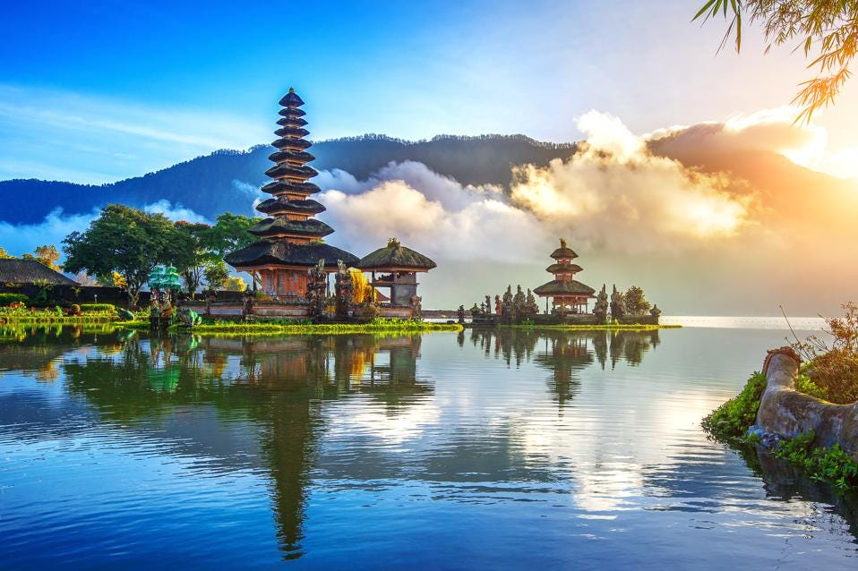

<!DOCTYPE html>
<html>

<head>
    <title>Exercice</title>
    <style>
        body {
            font-family: Arial, sans-serif;
            margin: 0;
            padding: 0;
            text-align: justify;
        }

        #container {
            max-width: 800px;
            margin: 0 auto;
            padding: 6px;
        }

        h1 {
            font-size: 36px;
            margin-bottom: 14px;
            text-align: center;
            color: #2c3e50;
        }

        ul {
            list-style-type: disc;
            margin-left: 32px;
            color: #333333;
        }

        li {
            margin-bottom: 8px;
        }

        a {
            display: block;
            margin-top: 4px;
            text-align: center;
            color: #3498db;
            text-decoration: none;
            font-weight: bold;
        }

        a:hover {
            color: #2c3e50;
        }

        .center {
            display: block;
            margin: auto;
            width: 50%;
        }

        .avis {
            background-color: #eee;
            padding: 16px;
            margin-top: 16px;
            margin-bottom: 16px;
        }

        #balimg {
            display: block;
            margin: 0 auto;
            max-width: 60%;
        }

        #bali {
            color: #3498db;

        }

        .sub-title {
            color: #3498db;
        }
    </style>
</head>

<body>

    <!--
    <div id="output">
        <h1>Les 5 meilleures destinations de voyage pour l'été</h1>
        <div id="container">
            <ul>
                <li>Bali, Indonésie</li>
                <li>Barcelone, Espagne</li>
                <li>Cinque Terre, Italie</li>
                <li>Hawaii, États-Unis</li>
                <li>Îles Fidji, Océanie</li>
            </ul>
        </div>
    </div>
    <a href="https://www.lonelyplanet.com/best-in-travel/countries">Découvrez d'autres destinations de voyage</a>
    <div id="container">
        <div id="bali-section">
            <h2>Explorer <span id="bali"> Bali </span> : découvrez les meilleurs endroits à
                visiter, où
                séjourner et
                comment y
                aller</h2>
            
            <h3 class="sub-title">Les attractions touristiques à Bali</h3>
            <ul>
                <li>Les temples de Bali, tels que le temple Besakih et le temple Tirta Empul</li>
                <li>Les rizières de Bali, telles que les rizières de Jatiluwih et les rizières de Tegallalang</li>
                <li>Les plages de Bali, telles que Kuta Beach et Sanur Beach</li>
                <li>Les parcs animaliers de Bali, tels que Bali Bird Park et Bali Safari and Marine Park</li>
            </ul>
            <h3 class="sub-title">Comment se rendre à Bali</h3>
            <p>Il y a plusieurs compagnies aériennes qui proposent des vols pour le Maroc, telles que Royal Air Maroc,
                Air France, et Emirates. Les principaux aéroports internationaux du Maroc sont l'aéroport Mohammed V à
                Casablanca, l'aéroport Marrakech-Menara à Marrakech et l'aéroport Fès-Saïss à Fès.</p>
            <h3 class="sub-title">Où séjourner à Bali</h3>
            <p>Bali propose une variété d'options d'hébergement, allant des villas de luxe aux auberges de jeunesse
                économiques. Certains des endroits les plus populaires pour séjourner à Bali sont Seminyak, Ubud et
                Canggu.</p>
            <blockquote class="avis">
                "J'ai adoré Bali ! Les temples étaient incroyables et les plages étaient magnifiques. Je recommande
                vivement de faire une excursion en bateau pour voir les dauphins."
                <cite>John Doe</cite>
            </blockquote>
            <iframe
                src="https://www.google.com/maps/embed?pb=!1m18!1m12!1m3!1d63337.76246311724!2d115.14780528878888!3d-8.340538326931423!2m3!1f0!2f0!3f0!3m2!1i1024!2i768!4f13.1!3m3!1m2!1s0x2dd23b94b4e3e0eb%3A0x9c02e1ca3a36ce48!2sBali%2C%20Indonesia!5e0!3m2!1sen!2sus!4v1653695457681!5m2!1sen!2sus"
                class="center" height="300" allowfullscreen="" loading="lazy"></iframe>
        </div>
    </div>
-->
    <script src="Ex3.js"></script>
</body>

</html>